EDA - New York City Airbnb Open Data¶
Team: Gustavo Cruz, Henrique Mayor and Pedro Fardin.
Task: regression. Target: price (USD per night of an Airbnb listing in NYC, 2019 snapshot).
The question we want a model to answer at the end of the semester is simple: given what a listing is and where it is, how much does it charge per night? This report is the first step. No model is trained here; the goal is to understand the data well enough to build the preprocessing pipeline that the neural network will consume.
Everything below is reproducible with two commands from a clean clone (see the README):
python code/eda.py # figures + docs/projects/eda/results.json
python code/preprocess.py # pipeline sanity report
All numbers quoted in the text are read from results.json, which code/eda.py writes, so the text and the code cannot drift apart silently.
0. Proposal¶
| Dataset | New York City Airbnb Open Data (Kaggle, dgomonov) |
| Size | 48,895 rows × 16 columns |
| Target | price (integer, USD / night) |
| Numerical features | 7 after dropping identifiers (latitude, longitude, minimum_nights, number_of_reviews, reviews_per_month, calculated_host_listings_count, availability_365) |
| Categorical features | 3 (neighbourhood_group, neighbourhood, room_type) |
| Motivation | Price is the one number every host has to pick and every guest reacts to. The dataset is small enough to iterate fast, has a clear geographic structure and mixes clean numeric features with a 221-level categorical, which is exactly the kind of thing we want to learn to feed a neural network. |
| First risk | The target is absurdly skewed (one listing at $10,000, median $106). Whatever we do, the loss will be dominated by a handful of rows unless we model log-price. |
1. Initial inspection¶
A. Data dictionary¶
The file is the public Airbnb snapshot for New York City compiled by Inside Airbnb and re-published on Kaggle (AB_NYC_2019.csv). Each row is one listing (one ad on the platform) as it looked in mid-2019; the most recent last_review in the file is 2019-07-08. Listings belong to hosts, and a host can own many listings.
| column | meaning | type | unit / values |
|---|---|---|---|
id |
listing identifier on Airbnb | int | - |
name |
title of the ad, written by the host | free text | - |
host_id |
host identifier | int | - |
host_name |
first name of the host | text | - |
neighbourhood_group |
borough | categorical | Manhattan, Brooklyn, Queens, Bronx, Staten Island |
neighbourhood |
neighbourhood inside the borough | categorical | 221 values |
latitude |
position | float | decimal degrees |
longitude |
position | float | decimal degrees |
room_type |
what is being rented | categorical | Entire home/apt, Private room, Shared room |
price |
target, nightly price set by the host | int | USD |
minimum_nights |
minimum length of stay the host accepts | int | nights |
number_of_reviews |
total reviews received | int | count |
last_review |
date of the most recent review | date | YYYY-MM-DD |
reviews_per_month |
average reviews per month since the first review | float | reviews / month |
calculated_host_listings_count |
how many listings the same host has in the file | int | count |
availability_365 |
days the calendar is open in the next 365 | int | days (0-365) |
Two things that are not obvious from the names and that we checked: calculated_host_listings_count is exactly the number of times each host_id appears in this file (100.0% of rows match a groupby('host_id').size()), so it is derived from the file itself, not from Airbnb's full catalogue; and reviews_per_month is missing exactly on the listings with number_of_reviews == 0 (the two sets coincide for all 48,895 rows), which settles how to impute it later.
B. Quality¶
Missing values. Only four columns have any, and two of them are the same 10,052 rows:
| column | missing | % |
|---|---|---|
last_review |
10,052 | 20.56% |
reviews_per_month |
10,052 | 20.56% |
host_name |
21 | 0.04% |
name |
16 | 0.03% |
The 20.56% are listings that never got a review, so this is not "lost" information: it is a legitimate state ("no reviews yet"). Everything else is complete.
Duplicates. 0 fully duplicated rows and 0 duplicated id. We also looked at name: 47,905 distinct titles for 48,895 rows, and the repeated ones are things like "Cozy room in Brooklyn" from different hosts, not copies of the same listing.
Impossible or inconsistent values, quantified:
price == 0: 11 listings. A nightly price of zero is not a price, it is a placeholder; these rows are removed from the dataset before anything else (48,895 → 48,884 rows).price >= 1000: 298 listings (0.61%), maximum $10,000. They are extreme but not impossible (penthouses exist, and so do hosts who set an absurd price to block the calendar). We keep them and deal with them through the log transform of the target (section 4A).minimum_nights > 365: 14 listings, maximum 1,250 nights; 747 listings (1.5%) ask for more than 30 nights. Nobody books 3.4 years on Airbnb; these are hosts using the field to effectively hide the listing. They are capped by the outlier strategy, not deleted.availability_365 == 0: 17,533 listings (35.9%). This is the most interesting "suspicious" value: a third of the listings have no open date in the next year. It is not an error (the calendar is simply closed, or fully booked), but it means thatavailability_365carries an "is this listing active?" signal as much as a supply signal. We keep it as is and flag it as a risk.reviews_per_month > 20: 3 listings (max 58.5). Possible for a very active shared room, so left alone; the 99th-percentile clipping takes care of them anyway.- Coordinates: latitude in [40.4998, 40.9131], longitude in [-74.2444, -73.7130], which is inside the city. Nothing to fix.
Columns dropped and why:
| column | reason |
|---|---|
id, host_id |
identifiers; a model that learns them is memorising rows |
name |
free text, 47,905 distinct values; could feed an NLP feature later, but not in this pipeline |
host_name |
first name of the host, a quasi-identifier with no legitimate predictive meaning |
last_review |
a date that is only informative relative to the snapshot date; its "has reviews" information already lives in number_of_reviews and reviews_per_month |
Leakage. No column is computed from price. The strongest rank correlation of any numeric column with the target in the raw file is longitude (Spearman -0.438), then latitude (0.136) and calculated_host_listings_count (-0.106). Nothing is suspiciously high, and the categorical columns describe the listing, not its price. We do not consider calculated_host_listings_count a leak even though it is derived from the file, because it does not use the target.
C. Target¶
After removing the 11 zero-price rows, price looks like this (n = 48,884):
| mean | median | std | min | Q1 | Q3 | P90 | P95 | P99 | max | skewness | kurtosis |
|---|---|---|---|---|---|---|---|---|---|---|---|
| $152.76 | $106 | $240.17 | $10 | $69 | $175 | $269 | $355 | $799 | $10,000 | 19.12 | 585.6 |
The mean is 44% above the median, the standard deviation is larger than the mean, and a skewness of 19 is far beyond anything a squared-error loss can handle. Figure 1(a) shows the histogram up to $1,000 (99.51% of the rows; the remaining 0.49% are a tail that stretches 10× further to the right). Figure 1(b) shows log1p(price): skewness drops to 0.63, the shape is close to a slightly right-skewed bell, and the small spikes are hosts rounding to $50, $100, $150, $200.
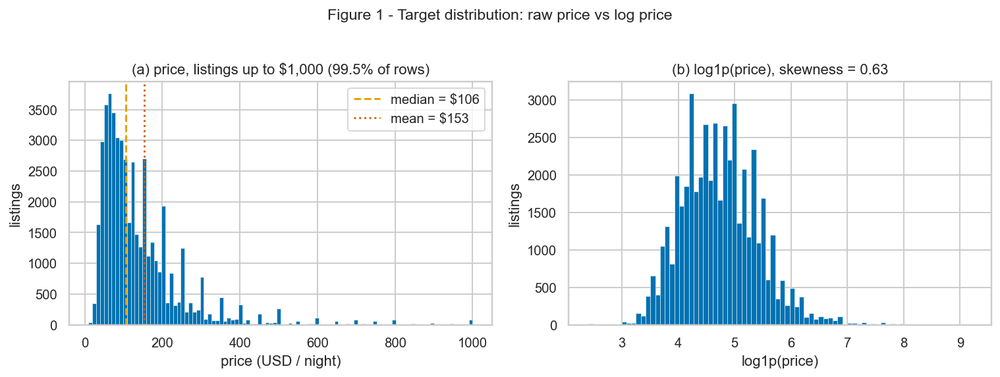
Conclusion: the model will be trained on log1p(price) and predictions exponentiated back. This single decision removes most of the "outlier" problem in the target.
D. Train and test¶
Split 80 / 20 with random_state=42, done right after the zero-price filter and before any other decision: 39,107 training rows and 9,777 test rows (20.0%). Since the task is regression we cannot stratify on the class, so we stratified on deciles of log1p(price), which guarantees the test set sees the same price range as the training set. The check in Figure 2 and the table below confirm it also preserved the categorical mix without us asking for it:
| train | test | |
|---|---|---|
| median price | $106 | $106 |
| mean price | $152.3 | $154.7 |
| Manhattan / Brooklyn / Queens / Bronx / Staten Island | 44.4 / 41.1 / 11.6 / 2.2 / 0.8 % | 44.0 / 41.3 / 11.7 / 2.2 / 0.8 % |
| Entire / Private / Shared | 51.9 / 45.7 / 2.4 % | 52.5 / 45.3 / 2.3 % |
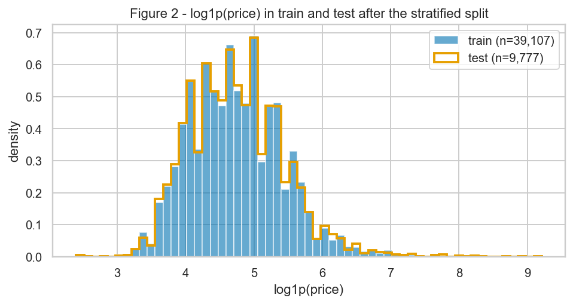
One detail worth recording now: the neighbourhood Fort Wadsworth has a single listing in the whole file, and it fell in the test set, so the test set contains a category the training set never saw. This is exactly the case the encoder in section 4A has to survive.
From here on every statistic, figure and fitted parameter uses the training set only.
2. Univariate analysis¶
A. Numerical features¶
Descriptive statistics of the 7 numerical features on the training set (n = 39,107; reviews_per_month has 31,051 non-missing values):
| feature | mean | median | std | Q1 | Q3 | min | max | skewness | % zeros |
|---|---|---|---|---|---|---|---|---|---|
latitude |
40.729 | 40.723 | 0.055 | 40.690 | 40.763 | 40.500 | 40.913 | 0.24 | 0 |
longitude |
-73.952 | -73.956 | 0.046 | -73.983 | -73.936 | -74.243 | -73.713 | 1.29 | 0 |
availability_365 |
112.7 | 45 | 131.8 | 0 | 227 | 0 | 365 | 0.77 | 36.0 |
minimum_nights |
7.08 | 2 | 20.74 | 1 | 5 | 1 | 1,250 | 21.8 | 0 |
number_of_reviews |
23.3 | 5 | 44.5 | 1 | 24 | 0 | 629 | 3.66 | 20.6 |
reviews_per_month |
1.37 | 0.71 | 1.69 | 0.19 | 2.00 | 0.01 | 58.5 | 3.35 | 0 |
calculated_host_listings_count |
7.24 | 1 | 33.3 | 1 | 2 | 1 | 327 | 7.85 | 0 |
The table already tells the story, so we spent the two figures of this item on the shapes that matter for preprocessing. Figure 3 shows all seven distributions, with the four heavy-tailed counts on a log1p axis (on a linear axis they are a single bar at zero):
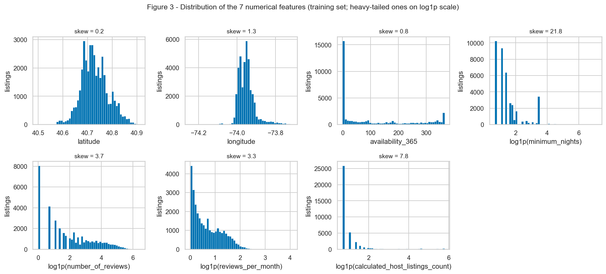
latitudeandlongitudeare roughly bell-shaped with a few bumps (the boroughs). They are the only two features that can be standardised as they are.minimum_nights,number_of_reviews,reviews_per_monthandcalculated_host_listings_countare all extremely right-skewed (skewness 3.3 to 21.8) and, even on a log scale, still skewed. 20.6% of the listings have zero reviews; the median host has exactly 1 listing but the maximum has 327.availability_365is not skewed in the usual sense but it is bimodal at the edges.
Figure 4 zooms in on the two spikes we think a model needs to know about:
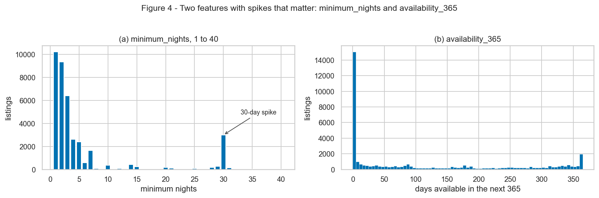
- (a) 66.4% of the listings ask for 1 to 3 nights (10,228 / 9,343 / 6,390 listings), but there is an isolated spike at 30 nights with 2,993 listings (7.7%), bigger than any value between 8 and 29. This is New York's rule that forbids short stays in many buildings: those are long-term rentals disguised as Airbnbs, and they will behave differently in price.
- (b) 36.0% of the training listings have 0 available days, and another 2.7% have all 365. The spike at zero is 15,000 rows, the next bin is below 1,000.
Conclusion: two scales (coordinates vs counts), four features that need a log, and two features with spikes that a scaler will not remove but that a network can learn from if we do not destroy them.
B. Categorical features¶
| feature | cardinality (train) | most frequent | % | least frequent | n | categories below 1% |
|---|---|---|---|---|---|---|
neighbourhood_group |
5 | Manhattan | 44.4% | Staten Island | 295 | 1 |
room_type |
3 | Entire home/apt | 51.9% | Shared room | 938 | 0 |
neighbourhood |
220 (221 in the full file) | Williamsburg | 8.0% | Richmondtown and 8 others | 1 | 195 |
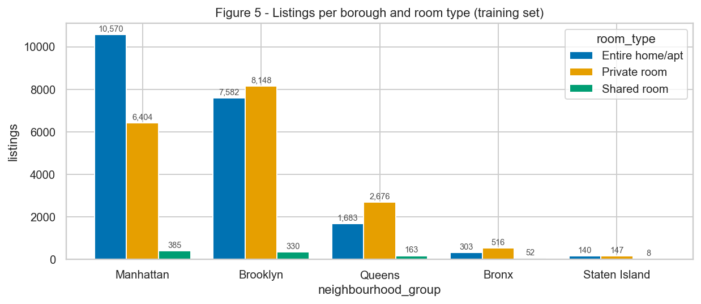
Figure 5 crosses the two small categoricals. Manhattan (17,359) and Brooklyn (16,060) hold 85.5% of the listings between them; Queens has 4,522, the Bronx 871 and Staten Island only 295. Entire homes dominate in Manhattan (10,570 vs 6,404 private rooms), private rooms dominate in Brooklyn (8,148 vs 7,582) and in every other borough. Shared rooms are rare everywhere: 938 listings in total (2.4%) and only 8 in Staten Island, so any per-cell statistic involving them has to be read with care.
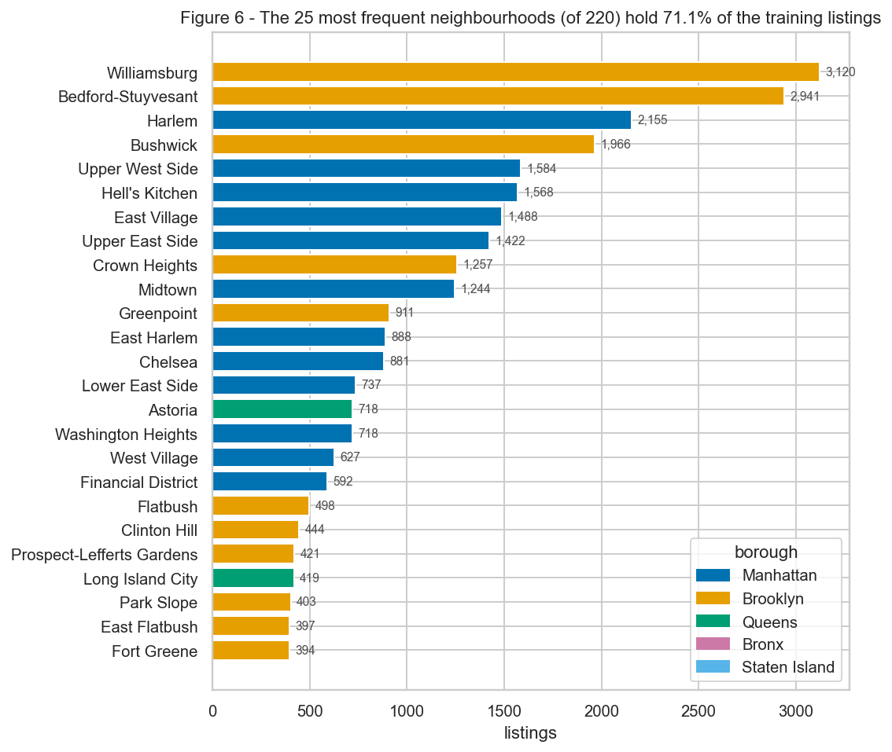
neighbourhood is the high-cardinality problem of this dataset. Figure 6 shows the 25 largest of the 220 neighbourhoods; they already hold 71.1% of the training listings, and the top 10 alone hold 47.9%. At the other end, 112 neighbourhoods have fewer than 30 training listings, 9 have exactly one, and together the 112 rare ones account for only 1,089 rows (2.78%). One-hot encoding all 220 would create 112 columns that are almost always zero and that the test set may contradict (Fort Wadsworth). That is the finding behind the rare-category grouping in section 4A.
Conclusion: room_type and neighbourhood_group can be one-hot encoded as they are; neighbourhood needs a frequency threshold, and Shared room / Staten Island / Bronx are small enough that the model will have few examples to learn from.
3. Bivariate and multivariate analysis¶
A. Numerical × numerical¶
We used Spearman rather than Pearson. Section 2A showed that five of the eight numerical columns (including the target) have skewness above 3 and maxima hundreds of times the median; Pearson is a linear correlation and a single $10,000 listing or a 1,250-night minimum moves it arbitrarily. Spearman works on ranks, which is also the right notion of "related" for features that will be log-transformed anyway. The difference is not academic: for longitude × price Pearson gives -0.15 and Spearman gives -0.44.
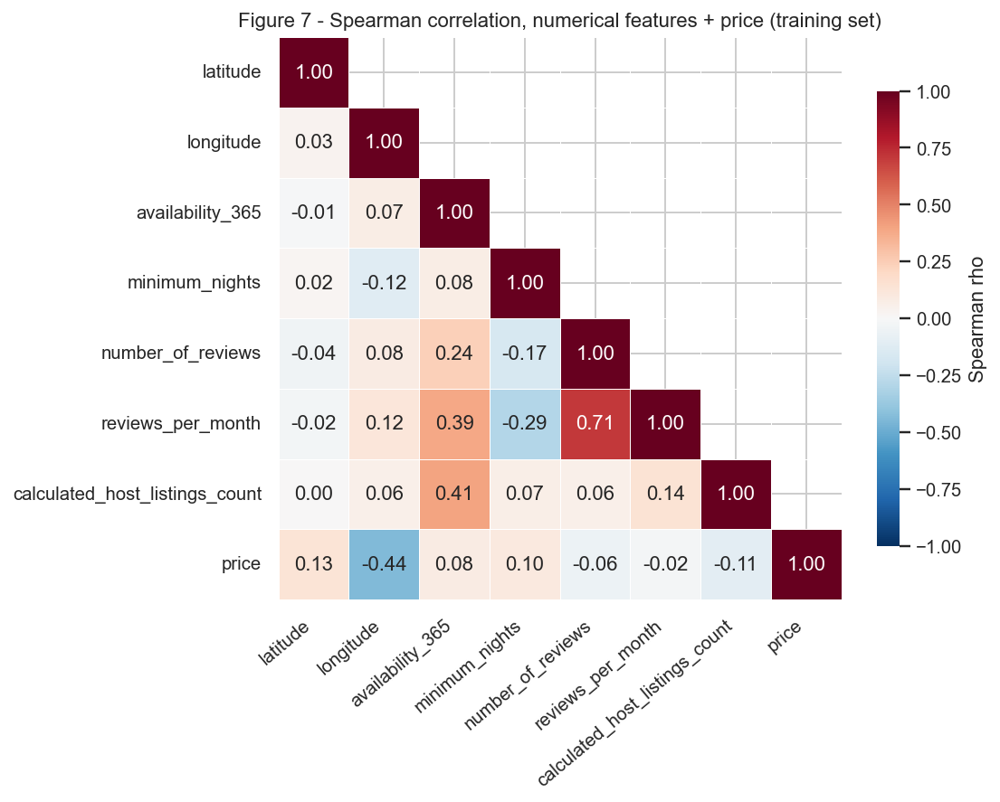
Reading Figure 7, the pairs that stand out:
| pair | Spearman | Pearson |
|---|---|---|
number_of_reviews × reviews_per_month |
0.71 | 0.55 |
longitude × price |
-0.44 | -0.15 |
availability_365 × calculated_host_listings_count |
0.41 | 0.23 |
availability_365 × reviews_per_month |
0.39 | 0.18 |
minimum_nights × reviews_per_month |
-0.29 | -0.13 |
Everything else is below 0.25 in absolute value. With the target, the only feature with a correlation worth the name is longitude (-0.44, i.e. prices go up as you go west, towards Manhattan); latitude is 0.13, calculated_host_listings_count -0.11, minimum_nights 0.10 and the rest is below 0.1. No single numeric feature predicts price on its own; the signal is in the interaction between position and room type, which is what the next two sections show.
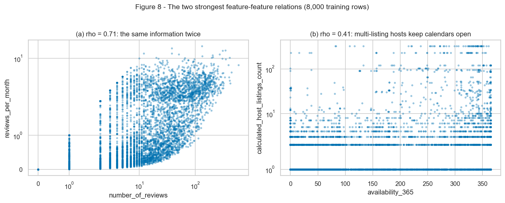
Figure 8(a) is the one redundant pair: reviews_per_month is number_of_reviews divided by the months since the first review, so the two are the same information at two time scales. We keep both for now (the ratio adds "recency", a 2-review listing from 2012 and one from last month are different), but if the network overfits this is the first pair to prune. Figure 8(b) shows that the 0.41 between availability and host portfolio size is not noise: hosts with dozens of listings keep their calendars open all year (the horizontal bands at the top sit at 300+ days), while single-listing hosts spread across the whole range.
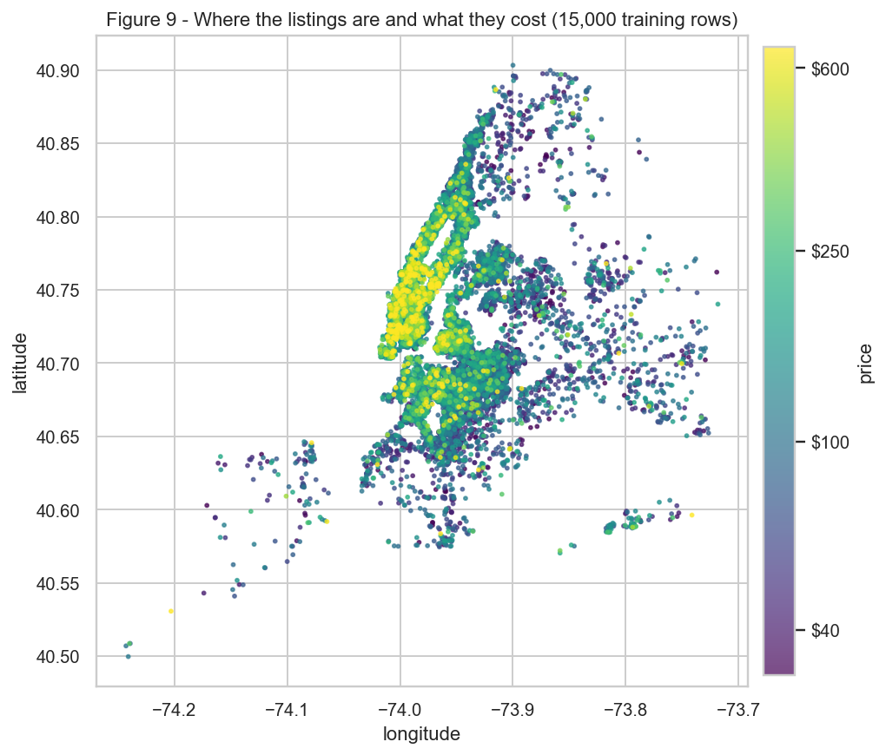
Figure 9 explains the -0.44 with longitude: the price is a function of distance to Manhattan, not of longitude itself. The bright band is Manhattan below Central Park plus the waterfront of Brooklyn; everything east of -73.9 is cheap no matter the latitude. Conclusion: latitude and longitude have to enter the model together (a network can learn the 2-D shape, a linear model on each coordinate cannot), and neither should be dropped.
B. Categorical × target¶
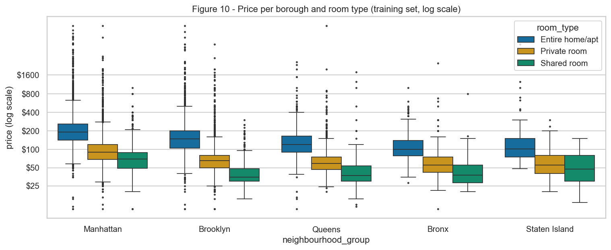
Figure 10 shows the price distribution for each borough × room type cell, on a log scale. Medians:
| borough | Entire home/apt | Private room | Shared room | all |
|---|---|---|---|---|
| Manhattan | $190 | $90 | $69 | $150 |
| Brooklyn | $149 | $65 | $35 | $90 |
| Queens | $120 | $59 | $37 | $75 |
| Bronx | $100 | $55 | $38 | $65 |
| Staten Island | $101.5 | $55 | $52.5 | $75 |
| all | $160 | $70 | $45 | $106 |
Two readings. First, room_type is the strongest single predictor in the dataset: entire homes cost 2.3× a private room and 3.6× a shared room at the median, and the boxes barely overlap inside each borough. Second, the borough effect is a roughly constant multiplier on top of room type (Manhattan ≈ 1.3-1.4× Brooklyn in every room type), which is good news for a log target because a multiplier becomes an additive offset. Just these two categoricals, used as group means, explain 45.4% of the variance of log1p(price) on the training set.
Conclusion of Figure 10: room type first, borough second, and the two combine multiplicatively, so a log target plus one-hot encoding of both is the right representation.
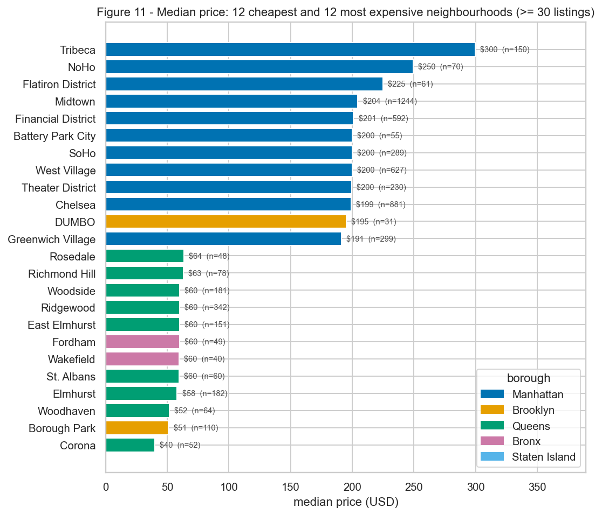
Figure 11 goes one level down, to neighbourhoods with at least 30 training listings (108 of them). The spread is 7.5× between the most expensive (Tribeca, median $299.5, then NoHo $249.5 and Flatiron $225) and the cheapest (Corona $40, Borough Park $51, Woodhaven $51.5). The top 12 are all Manhattan south of Central Park except DUMBO; the bottom 12 are Queens, the Bronx and outer Brooklyn. Replacing borough by neighbourhood in the group-mean experiment above raises the explained variance from 45.4% to 53.7%.
Conclusion of Figure 11: neighbourhood adds about 8 points of explained variance on top of borough, which is enough to justify keeping it despite the cardinality, but the gain comes from the ~100 neighbourhoods with enough data, not from the 112 rare ones.
C. Numerical × categorical¶
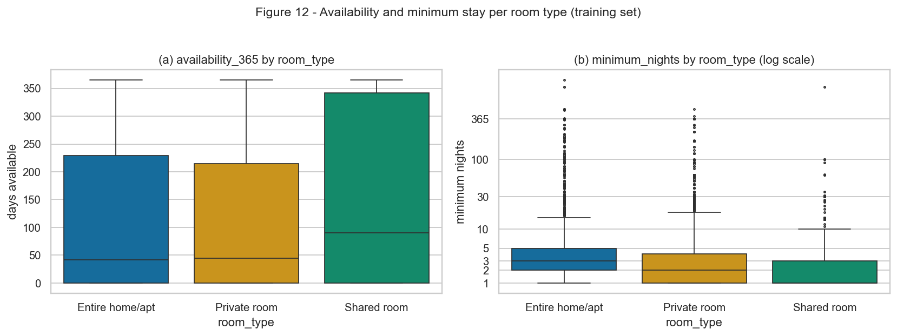
Figure 12(a), availability_365 by room type: the medians are 42, 45 and 90 days for entire home, private and shared rooms, and the third quartile jumps from 229 and 215 to 342. Shared rooms differ in both location and spread: they are open more of the year and much more variable. They are also the cell with the fewest closed calendars (25.9% at zero vs 35.2% and 37.5%). Figure 12(b), minimum_nights: medians 3 / 2 / 1 nights, Q3 at 5 / 4 / 3. The groups differ in location (entire homes ask for longer stays) but the spread on the log scale is similar, and the outliers above 30 nights exist in all three.
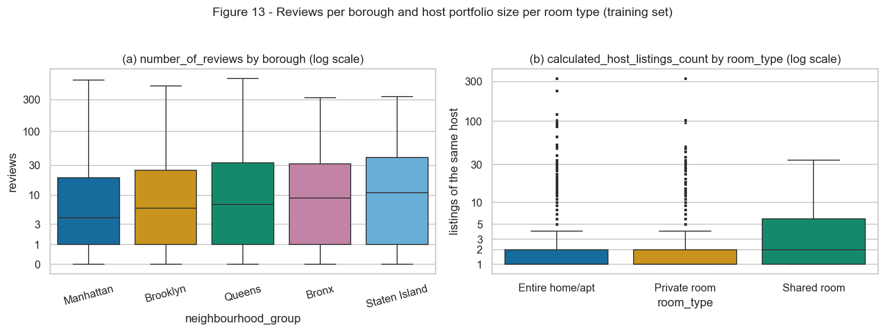
Figure 13(a), number_of_reviews by borough: the median rises as we leave Manhattan (4 → 6 → 7 → 9 → 11 reviews from Manhattan to Staten Island) and so does Q3 (19 → 25 → 33 → 31.5 → 39.5). A difference in location and spread in the same direction: outer-borough listings are fewer but, relative to their number, more reviewed, which fits a "fewer, more committed hosts" story. Figure 13(b), calculated_host_listings_count by room type: the median is 1 for entire homes and private rooms and 2 for shared rooms; 61.1% of shared rooms belong to a host with more than one listing against 25.1% of entire homes. Here the difference is mostly spread: shared rooms are the professional-host segment.
Conclusion: the numerical features do not just shift between categories, the shared-room segment has a different variance structure (open calendars, multi-listing hosts), which is one more argument for a model that can learn interactions rather than additive effects.
4. Preprocessing¶
Every choice below points to the finding that motivates it. The destination is a neural network, which changes two things compared with a tree model: scale matters (inputs should be roughly centred and of unit variance for the optimiser), and heavy tails matter (a few inputs at 50 standard deviations saturate the first layer).
A. Strategies¶
Row filter (before the split). The 11 rows with price == 0 were removed (section 1B). Nothing else is deleted: 48,884 rows go into the split.
Missing values. The only real missingness is reviews_per_month (20.6% of the training set), and section 1A showed it is missing exactly when number_of_reviews == 0. The honest value is therefore 0 reviews per month, not the median; we impute with a constant 0. last_review is dropped, name and host_name are dropped, so no other column needs imputation. Still, every branch of the pipeline has a SimpleImputer in front (median for numeric, most-frequent for categorical) so that a future file with a hole in latitude does not crash a model in production.
Outliers. Motivated by Table 2A and Figure 3: minimum_nights (max 1,250, skew 21.8), number_of_reviews (max 629), reviews_per_month (max 58.5) and calculated_host_listings_count (max 327, skew 7.85). The strategy is clip to the 1st-99th percentile learned on the training set, then log1p. The bounds the pipeline learned are:
| feature | lower | upper | training rows clipped |
|---|---|---|---|
minimum_nights |
1 | 46.9 | 392 |
number_of_reviews |
0 | 213.9 | 392 |
reviews_per_month |
0 | 6.86 | 392 |
calculated_host_listings_count |
1 | 232 | 267 |
In total 1,387 training rows (3.55%) had at least one value clipped (312 in the test set, using the training bounds). The 392 are not a coincidence: clipping at the 99th percentile touches about 1% of 39,107 rows per column by construction. availability_365 is bounded in [0, 365] and latitude/longitude are inside the city, so they are not clipped. The target is not clipped either: the log1p transform (section 1C, skewness 19.1 → 0.63) is what handles the $10,000 listing, and we want the model to see that such listings exist.
Figure 14 shows the four heavy-tailed features before and after the clip + log + standardise branch. Skewness goes from 21.8 → 1.3, 3.7 → 0.3, 3.5 → 0.9 and 7.8 → 3.2. calculated_host_listings_count stays skewed because 65% of the listings sit at exactly 1; no monotone transform can spread a point mass, and that is fine.
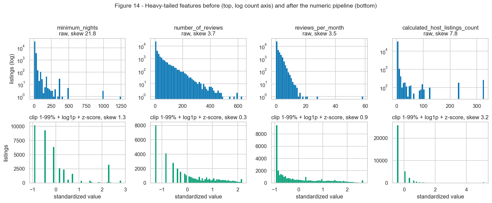
Categorical encoding. neighbourhood_group (5) and room_type (3) are one-hot encoded with handle_unknown="ignore": an unseen borough would become an all-zero row instead of an error. neighbourhood (220 in train, Figure 6) is one-hot encoded with min_frequency=30: the 112 neighbourhoods with fewer than 30 training listings are merged into one infrequent column, and handle_unknown="infrequent_if_exist" sends any category never seen in training to that same column. That is how Fort Wadsworth, which only exists in the test set, is handled without special code: it lands in infrequent together with 305 other test rows. The result is 108 + 1 = 109 neighbourhood columns instead of 220. We chose one-hot over target encoding on purpose: target encoding would need to be fitted inside cross-validation to avoid leaking the target, and 109 sparse inputs are not a problem for a network.
Scaling. Coordinates range over 0.4 degrees, counts over hundreds, dummies over {0, 1}: every numeric branch ends with a StandardScaler fitted on train, so that the network sees inputs of comparable magnitude. The log comes before the scaler (standardising a skew-21 variable just rescales the outliers).
Target. log1p(price), exposed as transform_target() in the module. The pipeline itself only touches X.
B. Dimensionality reduction¶
All three projections use the same 15 features: the 7 standardised numerical features plus the 8 dummies of neighbourhood_group and room_type, taken from the output of the fitted pipeline on the training set. The 109 neighbourhood dummies were left out on purpose: they are 98% zeros and would add 109 near-zero-variance directions that tell PCA nothing. Points are coloured by log1p(price).
PCA.
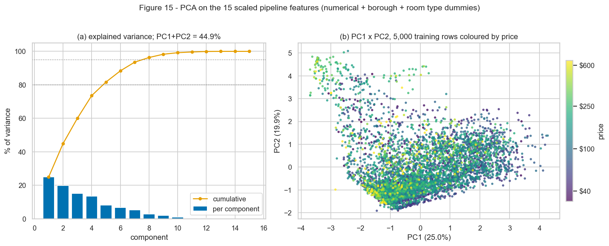
PC1 explains 25.0% and PC2 19.9%, so PC1 + PC2 = 44.9% of the variance; it takes 5 components to reach 80% and 8 to reach 95% (Figure 15a). On the 7 numerical features alone PC1 + PC2 would be 51.7%, the dummies spread the variance a bit. The loadings in Figure 16 say what the axes are:
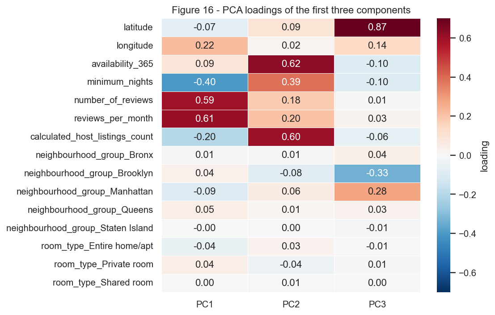
- PC1 is a review activity axis:
reviews_per_month(0.61) andnumber_of_reviews(0.59) pull one way,minimum_nights(-0.40) andcalculated_host_listings_count(-0.20) the other. High PC1 = short-stay listing with lots of recent reviews; low PC1 = long-minimum, multi-listing host with few reviews. - PC2 is a professional host axis:
availability_365(0.62),calculated_host_listings_count(0.61) andminimum_nights(0.39), all positive. It is the 0.41 correlation of Figure 8(b) turned into a direction. - PC3 is pure geography:
latitude(0.87), with Manhattan (+0.28) against Brooklyn (-0.34).
The room-type dummies have loadings below 0.05 on every one of the first three components, which is the honest reading of Figure 15(b): the best linear 2-D picture of the features is about how the listing is operated, not about what it is, and that is why price barely shows a gradient (Spearman of PC1 with log-price is -0.15, of PC2 it is 0.07). The yellow points (expensive) are smeared through the cloud.
t-SNE (5,000 training rows sampled with seed 42, init="pca", perplexity 30 and 100):
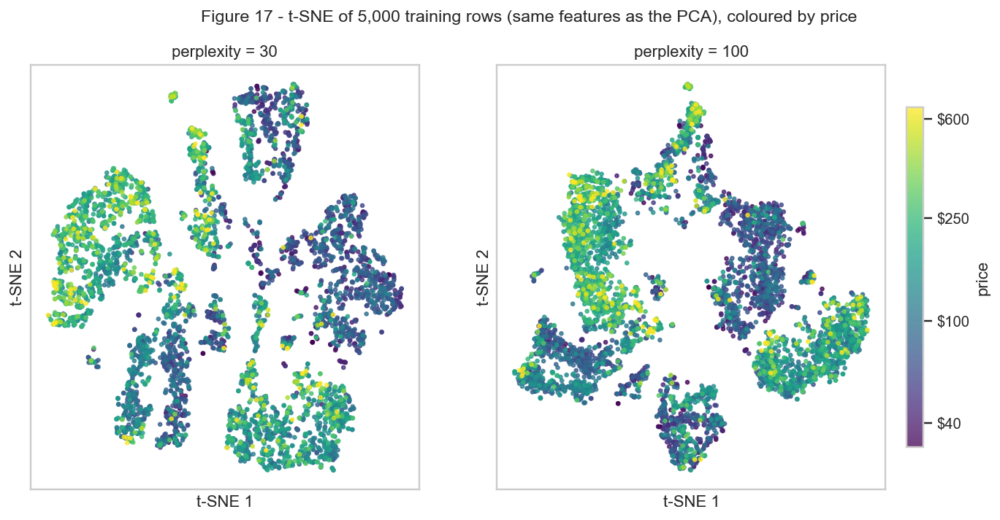
UMAP (the same 5,000 rows, n_neighbors 15 and 100, min_dist=0.1):
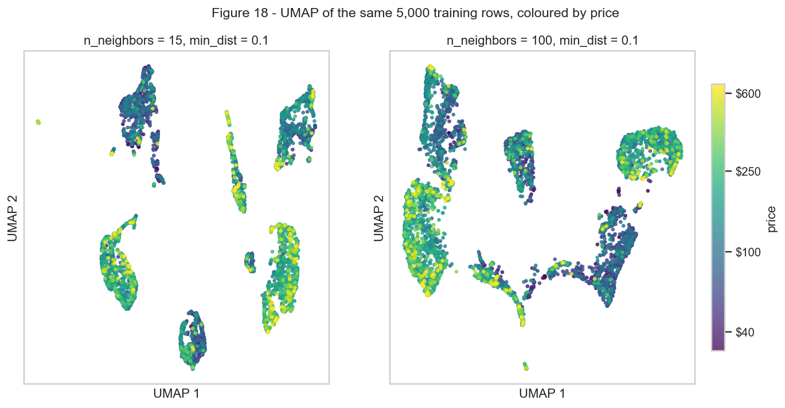
Comparison. The nonlinear projections show something PCA cannot: both of them split the data into a handful of islands, and the islands are the room type × borough cells (dummies are discrete, so the neighbourhood graph that t-SNE and UMAP build is almost disconnected between cells). Inside each island there is a visible price gradient, from a dark (cheap) end to a bright (expensive) end: the "entire home in Manhattan" island is mostly green/yellow, the private-room islands are mostly purple/blue. So the structure that a model has to learn is categorical cell first, then a continuous gradient inside the cell, which PCA flattens into one cloud because the dummies carry little variance.
The parameter sweep behaves as expected. At perplexity 30 t-SNE breaks the cells into many small blobs; at 100 it merges them into 4-5 large regions with a cleaner colour gradient. UMAP with n_neighbors=15 gives sharply separated islands, with 100 the islands get bridges and the global layout is more stable. We remind ourselves that in both methods the size of an island and the distance between islands have no meaning: the shared-room island is not "far" from the others in any measurable sense, and UMAP's tighter clusters do not mean better separation than t-SNE's. The useful reading is only which points are neighbours, and that reading is consistent across the four panels.
C. Pipeline¶
The pipeline lives in code/preprocess.py and is importable:
from code.preprocess import load_data, split_data, build_preprocessor, transform_target
df = load_data() # csv + price > 0 filter
X_train, X_test, y_train, y_test = split_data(df) # 80/20, seed 42, stratified on log-price deciles
pre = build_preprocessor() # ColumnTransformer
X_train_t = pre.fit_transform(X_train) # fit on train only
X_test_t = pre.transform(X_test) # test is only transformed
The ColumnTransformer has five branches, one per feature group, and python code/preprocess.py prints the sanity report:
rows after filters : 48884
train / test rows : 39107 / 9777
NaN in train after pipe : 0
NaN in test after pipe : 0
X_train_t shape : (39107, 124)
X_test_t shape : (9777, 124)
n features out : 124
No NaN is left in either set. The 124 output features are: 2 geo (geo__latitude, geo__longitude), 1 bounded (bounded__availability_365), 4 heavy-tailed (heavy__minimum_nights, heavy__number_of_reviews, heavy__reviews_per_month, heavy__calculated_host_listings_count), 5 borough dummies (cat__neighbourhood_group_*), 3 room-type dummies (cat__room_type_*), and 109 neighbourhood dummies (hood__neighbourhood_*, the last one being hood__neighbourhood_infrequent_sklearn). The full list is what pre.get_feature_names_out() returns and is printed by the script.
5. Synthesis¶
Written for whoever builds the model next.
Main findings
- Model log-price, not price. Skewness 19.1 on the raw target vs 0.63 after
log1p(Figure 1, Table 1C). A squared-error loss on raw price would be fitting the 298 listings above $1,000. - Room type and location explain half of the variance before any modelling. Group medians of borough × room type give an R² of 0.454 on log-price, neighbourhood × room type gives 0.537 (Figures 10 and 11). A model that does not beat ~0.54 R² on the training set has learned nothing from the numerical features.
- Price is geographic in 2-D.
longitudealone has Spearman -0.44 with price but the map (Figure 9) shows a "distance to lower Manhattan" shape that needs both coordinates together. - The numerical features describe how a listing is operated, not what it costs. PCA's first two axes (review activity, professional host; Figure 16) carry 44.9% of the feature variance and almost no price gradient. t-SNE and UMAP (Figures 17-18) show the price gradient inside each room type × borough island.
- Two spikes worth a feature each: 7.7% of listings at exactly 30 minimum nights (Figure 4a) and 36.0% with zero availability (Figure 4b). The pipeline keeps the information (clipping does not touch 30, and 0 stays 0) but the modelling step could add explicit
is_30_nightsandis_closedflags. - One redundant pair:
number_of_reviews×reviews_per_month, Spearman 0.71 (Figure 8a). Kept for now, first candidate to drop.
Risks and handling plan
| risk | evidence | plan |
|---|---|---|
| Extreme prices dominate the loss | max $10,000, kurtosis 585.6 (1C) | train on log1p(price); report MAE in dollars on the test set too, so the metric is readable |
| 36% of listings with closed calendars may be inactive, with stale prices | Figure 4b | keep them (no ground truth to remove them) but evaluate the error separately on availability_365 == 0 vs > 0 |
| Rare categories: Shared room (2.4%), Staten Island (0.8%), 112 neighbourhoods with < 30 listings | Tables 2B | rare neighbourhoods grouped into infrequent; monitor per-borough and per-room-type error; consider embedding neighbourhood instead of one-hot if the 109 columns overfit |
| Unseen category at test time (Fort Wadsworth) | 1D | handle_unknown="infrequent_if_exist" already routes it to infrequent; no code change needed |
| Collinear review features | Spearman 0.71 (3A) | dropout / weight decay in the network; drop reviews_per_month if validation says so |
| Hosts with many listings share the same price policy, so rows are not independent | 327 listings from one host (1B) | a grouped split by host_id would be stricter; we kept the random split because the course asks for a plain stratified split, but this is the first thing to try if test error looks optimistic |
Results summary
| # | Results summary | Value |
|---|---|---|
| 1 | Dataset, task and target | NYC Airbnb Open Data 2019 (Kaggle) · regression · price (USD / night) |
| 2 | Instances × features (numerical / categorical) | 48,895 × 16 in the file; 48,884 × 10 features used (7 numerical / 3 categorical) + target |
| 3 | Column with the most missing values and its percentage | last_review and reviews_per_month, 10,052 rows each (20.56%) |
| 4 | Dropped columns and the reason | id, host_id (identifiers), name, host_name (free text / quasi-identifier), last_review (date, redundant with review counts); 11 rows with price == 0 removed |
| 5 | Mean and median of the target | mean $152.76 · median $106 (skewness 19.12; 0.63 after log1p) |
| 6 | Size of the training and test sets | 39,107 train · 9,777 test (80/20, seed 42, stratified on log-price deciles) |
| 7 | Most correlated numerical pair and its value | number_of_reviews × reviews_per_month, Spearman 0.706 |
| 8 | Rows affected by the outlier strategy | 1,387 training rows (3.55%) clipped at the 1st/99th percentile in at least one of 4 features; 312 test rows |
| 9 | Variance explained by PC1 + PC2 | 44.9% (25.0% + 19.9%) on the 15 scaled pipeline features |
| 10 | shape of train and test after the pipeline |
(39,107, 124) and (9,777, 124), 0 NaN |